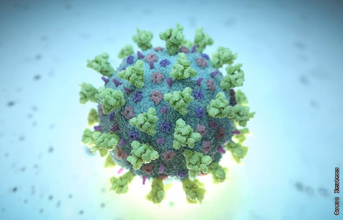
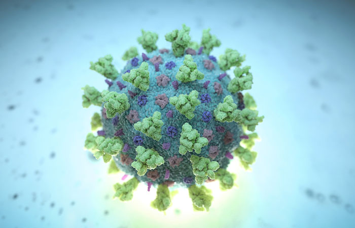
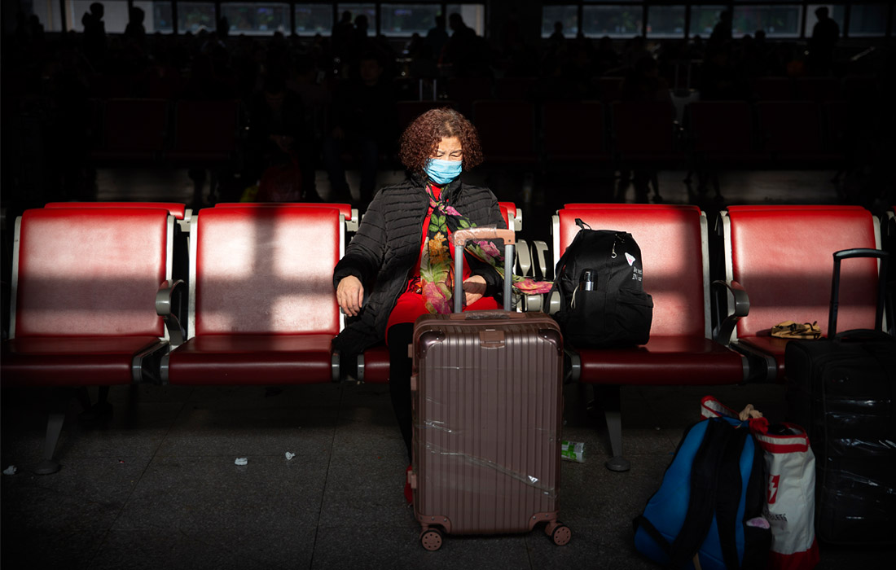
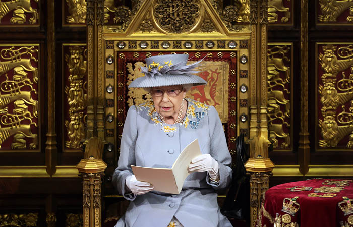

Первое заражение коронавирусом в Хубэе датировали 17 ноября
Гонконгская South China Morning Post привела засекреченные данные правительства Китая

Москва.13 марта.INTERFAX.RU - Возможно, первый в Китае случай заражения коронавирусом COVID-19 датируется 17-м ноября 2019 года, а не в декабре, как официально сообщалось ранее.Об этом пишет South China Morning Post со ссылкой на данные правительства Китая.Судя по опросам врачей в Ухане, они поняли, что имеют дело с новым вирусом, только в конце декабря.

Ранее официально считалось, что вспышка COVID-19 началась в декабре 2019 года в Ухане.Сообщалось, что первые заразившиеся посещали местный рынок, где продают экзотических животных и их мясо, и что вирус мог перейти к человеку от диких животных.Врача, который первый начал бить тревогу, преследовали за распространение панических слухов.Эксперты высказывали мнение, что на самом деле заражения могли начаться и раньше, просто официально они не были подтверждены.
По данным South China Morning Post, чиновники пока установили по крайней мере 266 человек, которые заразились коронавирусом в 2019 году и все при этом в какой-то момент наблюдались врачами.Некоторые из этих случаев были установлены задним числом, после проверки анализов у уже выздоровевших людей.
Первым заразившимся пока считается 55-летний житель Хубэя.С 17 ноября, когда он обратился к врачу, ежедневно появлялись от одного до пяти новых случаев заражения, следует из данных правительства.К 15 декабря таких случаев было 27, к 20 декабря их стало уже 60.
27 декабря врач одной из больниц Хубэя Чжан Цзисянь предупредил Госкомитет здравовохранения о появлении нового коронавируса.На тот момент заразиться успели уже больше 180 человек, хотя врачи не обо всех случаях подозревали, пишет газета.31 декабря было 266 заболевших, 1 января - 381.
При этом 11 января администрация Уханя заявляла, что в регионе всего 41 случай заражения
Эти правительственные материалы так и не публиковались, но они дают ценную информацию о скорости распространения болезни на начальной стадии, отмечает издание.Ученые теперь стремятся установить так называемого пациента 'номер ноль', чтобы понять первоисточник инфекции.Сейчас известно о первых девяти случаях заражения в ноябре, это четверо мужчин и пять женщин, и пока никого из них нельзя считаеть 'номером ноль'.Им от 39 до 79 лет, но даже не известно, являются ли они жителями Уханя или нет.
Газета допускает, что были и более ранние случаи заражения COVID-19, о которых ей не известно.По данным ВОЗ, первый случай в Китае был подтвержден 8 декабря, но организация не собирает такие данные сама, а просто пользуется тем, что ей передают правительства разных стран.

Posted On: 2020-03-13T06:58:00

Content Date: 2020-03-13
Download Date: 2021-05-13
Document ID: L0C04C2D8